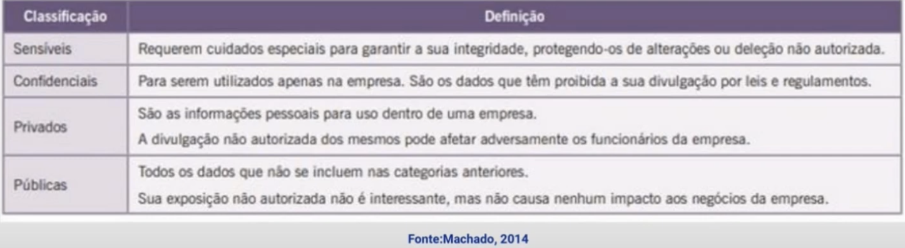

Disciplinas
Segurança da Informação. Concluído
Materiais
[UFMS Digital] Segurança da Informação - Módulo 4 - Unidade 2
Prof° ministrante: Dionisio Machado Leite Filho.
Introdução.
- Políticas de segurança devem estar relacionadas à classificação de dados; realização de cópias de segurança; utilização de mídias adicionais.
- Devem envolver proteção dos dados pessoais ou dados em uma rede.
- Cópias de segurança - prevenir a perda de todas as informações armazenadas.
Dados.
- É importante reconhecer qual informação é fundamental para uma empresa e atribuir a ela um valor.
- Capacidade que permite mensurar a quantidade de recursos que devem ser utilizados para proteger a informação.
- Nem todos os dados têm o mesmo valor.
- Dados organizados de acordo com as implicações resultantes em caso de perda ou divulgação inapropriada.
- A classificação dos dados deve indicar o nível de confidencialidade, integridade e disponibilidade.
- Utilidade dos dados (quem define esta utilidade é quem utiliza o dado na empresa);
- Valor do dado (qual a importância financeira do dado para a empresa);
- Idade do dado (refere-se à data e à hora da última modificação do dado);
- O nível do dano que poderia ser causado se os dados forem divulgados.
- O nível de dano que poderia ser causado se os dados forem modificados de forma não autorizado ou corrompidos;
- Leis, regulamentos ou responsabilidades que a empresa tem sobre a manutenção e proteção dos dados.
- Quem deve acessar esses dados (que são restritos à alta direção, por exemplo);
- Quem deve fazer a manutenção desses dados;
- Onde devem ser mantidos e armazenados esses dados;
- Quem está autorizado a reproduzir esses dados;

...
Backups
- Backup é uma cópia dos dados em um computador ou em um sistema que será armazenada em uma mídia magnética removível, como fitas magnéticas, DVDs ou discos rígidos removíveis.
- Sua finalidade é permitir a restauração dos dados em caso de ocorrência de uma perda total ou parcial de algum deles no computador ou na rede onde se encontram.
- Ex.: Política de geração de backup diário, semanal, mensal. Responsável por tal atividade.
Web.
- Web amplamente usada no mundo dos negócios, pelos órgãos governamentais e por particulares;
- Internet e a Web são vulneráveis;
- Variedade de ameaças:
- integridade;
- confidencialidade;
- negação de serviço;
- autenticação.
- É necessário adicionar mecanismos de segurança.
- Utilização de protocolos como SSL e TLS.
- SSL - Secure Socket Layer - uma associação entre cliente e servidor criada pelo Protocolo de Estabelecimento de Sessão.
- TLS - Transport Layer Security - usa uma função pseudo-aleatória para expandir segredos, tem códigos de alerta adicionais, diferenças pequenas em cifras disponíveis e diferenças em tipos de certificados.
Política de segurança.
- A segurança possui várias vertentes e várias áreas de interesse;
- Várias soluções que passam pelos dispositivos e vão até as aplicações;
- Quais soluções utilizar?
- Quais rotinas de verificação utilizar?
- Quais logs gerar?
- Como analisar tais logs?
- Política de segurança - 2
- De acordo com a perspectiva da empresa ou instituição que implementa a política.
- Cada empresa possui sua própria política.
- Uma boa política de segurança deve promover:
- Segurança física;
- Segurança lógica;
- Treinamento de pessoal;
- Lista de quais conteúdos podem ou não ser acessados;
- Lista de permissões e níveis de restrição.